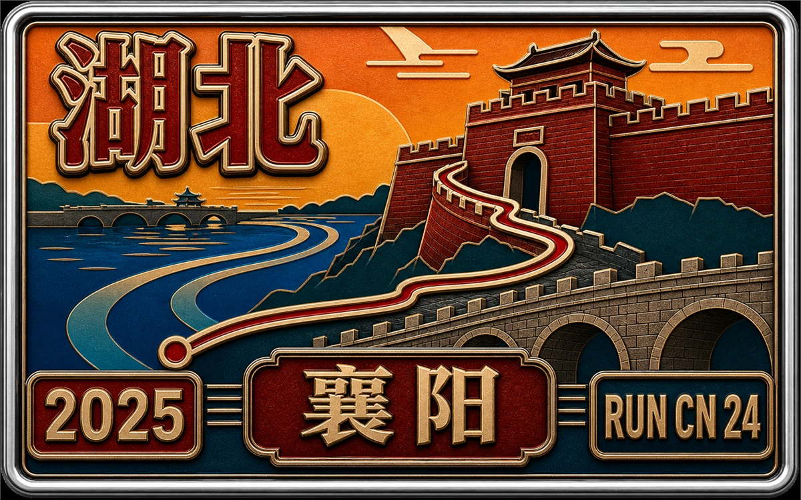

RUN50 DISPATCH · RUNCN
RunCN 第24站 · 襄阳马拉松
RunCN · 中国跑马故事
Vlog 开场位｜Runcn
OPENING NOTE
RunCN 第 1 站来到湖北襄阳。古城、城墙、汉江、大桥与街区被一条马拉松赛道串联起来，历史感和生活气并存。襄阳马拉松规模不大但口碑稳定，补给密集、志愿者热情，赛道节奏友好。作为回国第一跑，没有刻意冲成绩，最终意外跑进四小时，是一个不错的开始。
本文速记
RunCN 第 1 站来到湖北襄阳。古城、城墙、汉江、大桥与街区被一条马拉松赛道串联起来，历史感和生活气并存。襄阳马拉松规模不大但口碑稳定，补给密集、志愿者热情，赛道节奏友。

奖牌质感封面｜Runcn
回国补婚礼，顺便跑个马
🏯 襄阳, 湖北
时隔 五年零 9 个月，我终于又回到祖国的怀抱了。
这趟回来有个正经任务：和 Siqi 在家里人面前，补办一个婚礼仪式。疫情那几年家人都到不了美国，现在总算把这件事给补上了。

Wedding Ceremony @Arsenan

Wedding Photographer @Arsenan

Wedding Photographer · 2 @Arsenan
十一假期在东北老家的婚礼算办得挺圆满的，不是那种特别豪华的，但是非常热闹、非常温馨。
东北亲戚的战斗力不用多说，直接把现场整成大型社交局；南方姑娘那边的亲友团也非常给面子，阵容也不小。

Wedding Photographer · 3 @Arsenan

Wedding Photographer · 4 @Arsenan

Wedding Photographer · 5 @Arsenan
唯一的问题是：真的累。父母忙前忙后，我自己也被安排得明明白白，最后成功胖了十几斤，属于“婚礼过劳肥”的典型案例。

Wedding Photographer · 6 @Arsenan

Wedding Photographer · 7 @Arsenan

Wedding Photographer · 8 @Arsenan
婚礼办完，Siqi 马上回美国上班了，我还可以在国内多待一阵子。
我去年年底正式入职美的美国研发中心，这次回来算公差。然后我就老毛病又犯了：周末想跑个马拉松。人菜瘾大，那种。
正好湖北算是我的跑步启蒙地，一直想再回武汉看看。
汉马参加不了，时间对不上，不过口碑很好的 襄阳马拉松 正好赶上我在国内的时间窗口。
再加上国内马拉松现在普遍要抽签，我还挺幸运地中签了。

Shunde @Arsenan
于是顺势计划出炉：借道武汉 → 直抵襄阳 → 回国第一跑。
一举两得，天时地利人和。
借路武汉，骑车绕东湖，武大珞珈山
🏯 襄阳, 湖北
10 月 17 号周五晚上，我从顺德坐高铁去武汉。
每次坐高铁我都得感叹一句，咱国家的高铁太强了。顺德到武汉，三个多小时就到了，真快啊。
我后来查了下资料，中国的高铁里程占了全球的大约百分之八十，这个数字真的不是说着玩，是真厉害。
我选的旅馆在武汉大学旁边。既然都住在门口了，肯定要进去转一圈。
结果这次的武大让我有点不适应。
最近学校出了不少负面新闻，加上现在实行封闭管理，外校人员工作日基本没机会进去。
我以前对武大的印象是 非常开放，非常包容，非常有气度，属于那种你随便走进来坐坐都没人管的学校。
这次站在校门口，看见一排显眼的牌子写着 “学校不是景点，外来人员禁止入内”，这种感觉挺奇怪。
就是觉得武大好像失去了某种特质，以前那种随便往桂园走、随便上珞珈山晃悠的自由，现在基本没了。
不知道刘道玉老校长，看到今天的武大，会是什么样的感受。
不过并不是完全没有办法。我问了一圈才知道，学校在周末是可以正常参观的。
算是意外收获，我在校门口拍了一张夜景。

WHU @Arsenan
周六一直下雨，武汉突然降温，风也挺凉。我也没管那么多，想着先去绕个东湖，再去武大看看。
我在门口扫了辆共享单车，冒着小雨往东湖骑。

West Lake @Arsenan

West Lake · 2 @Arsenan

Chu Ancient City @Arsenan
六年没来了，这边变化挺大，湖边多了不少工程，一时间我还真没找到绿道入口。后来是保安大叔指了路，我才重新骑上东湖绿道。
雨天人不多，路上基本就是我和几个环卫工人。

West Lake · 3 @Arsenan

West Lake · 4 @Arsenan

West Lake · 5 @Arsenan

West Lake · 6 @Arsenan
绿道边的树、湖面、落叶，全是湿漉漉的，挺安静。我边骑边想，当年在武大读书真不错，出宿舍门就是东湖，训练条件太好了。
骑到一半，我还有心情放点无人机拍几张照片，算是留点纪念。

West Lake · 7 @Arsenan

West Lake · 8 @Arsenan

West Lake Cat @Arsenan

Han Show @Arsenan
整圈快二十公里，我后半程加速，差不多两个小时才骑完，整个人都湿透了。
到了武大东边，我想着进去看看。学校周末能参观，但要从指定的门进。我也不知道哪个门，就跑到以前宿舍附近那边和保安小哥说想参观。
他问我有没有预约，我当然没有。我说我是校友，他犹豫了一下，还是让我进了。
进来后发现校园里多了好多共享电动车，可惜只有在校生能用。我想进去看原来的宿舍，现在都得刷脸，也进不去。

WHU · 2 @Arsenan

WHU · 3 @Arsenan

WHU · 4 @Arsenan

WHU · 5 @Arsenan
我就随便在校园里转了转，走到了樱花大道和老斋舍。
老图书馆前站着不少校友在拍照。我和一个老校友互相帮忙照了几张，他还告诉我校友可以申请校友卡，以后进学校方便很多。

WHU @Alumnus @Arsenan

WHU @Alumnus · 2 @Arsenan

WHU · 6 @Arsenan
后来我去了梅操，又往行政楼那边走。一路上都是来看校园的校友，大家边走边聊，氛围挺好。武大这些年怎么变都行，但这里确实是个让人容易怀念的地方。

WHU · 7 @Arsenan

WHU · 8 @Arsenan
再往前就是珞珈山。我顺着山路往上一走，突然想起来以前经常在这里训练，一圈大概三公里。山上人很少，我又随手拍了点跑步的镜头，意思一下。
时间有点紧，我的火车误点，我刚改签过，不能在这久待。

WHU · 9 @Arsenan

WHU · 10 @Arsenan

WHU · 11 @Arsenan

WHU · 12 @Arsenan

WHU · 13 @Arsenan
下山后，我想着去看看牌坊，结果还迷了路。问了个学生才找到门口，又让路人帮我拍了几张照，算是完成任务了。

WHU · 14 @Arsenan

WHU · 15 @Arsenan

WHU @A Buddy @Arsenan

WHU @A Buddy · 2 @Arsenan
离开学校，我去了汉口站，在那儿吃了碗蔡林记的全家福热干面，配了个豆皮。味道还是很熟悉，就是热量有点离谱。吃完就准备坐车去襄阳了。

Han Kou @Arsenan

Han Kou · 2 @Arsenan
抵达襄阳，领装备，逛襄阳古城
🏯 襄阳, 湖北
从武汉到襄阳，高铁就一个小时。一下车我就看到火车站里举牌子的志愿者，上面写着参赛选手接驳。

Xiang Yang @Arsenan

Xiang Yang · 2 @Arsenan
接驳车直接把我们送到诸葛亮广场。这个广场挺大的，正中间就是那尊特别醒目的诸葛亮雕像，手里拿着羽扇，气场十足。
马拉松博览会就在这里，帐篷一排排的，人特别多。

Zhuge Liang Square @Arsenan
国内马拉松的“烟火气”真的和美国不一样，摊位密度大，大家都很兴奋，领装备、拍照、买东西，一种春运式的热闹感。
最让我印象深的是官方配套的 “襄阳牛肉面摊”，热气腾腾，味道浓厚，这天气来一碗真的太顶了。

EXPO @Arsenan

EXPO · 2 @Arsenan

EXPO · 3 @Arsenan
但说句实话，襄阳是真的冷。我回旅馆后果断打开美团闪购，买了两件外套，一件准备第二天跑前扔，一件留着这几天穿。
晚上我打车去了襄阳古城。
襄阳古城本身历史特别长，城墙、城门规模都很大，当年是兵家必争之地。现在开发成了古城商业区，店铺挺多，游客也多，吃喝玩乐一条龙。

Xiangyang Ancient @Arsenan

Xiangyang Ancient · 2 @Arsenan
我随便挑了家牛肉面馆子，人还挺多的，对面那家就完全没人。
吃完饭，我沿着古城墙往汉江边走。夜景非常漂亮，对岸的高楼灯光把江面照得五颜六色。江边不少人在放孔明灯，还有几个卡树上了。

Xiangyang Ancient · 3 @Arsenan

Xiangyang Ancient · 4 @Arsenan

Xiangyang Ancient · 5 @Arsenan

Xiangyang Ancient · 6 @Arsenan

Xiangyang Ancient · 7 @Arsenan

Xiangyang Ancient · 8 @Arsenan
古城墙本身特别厚，有点西安城墙那种感觉。城墙上还有一些名人纪念亭，下面还有大妈在跳广场舞。这种现代生活和古城气质混在一起，很有趣。

Xiangyang Ancient · 9 @Arsenan

Xiangyang Ancient · 10 @Arsenan

Xiangyang Ancient · 11 @Arsenan
我后来从城墙另一边下去，想走点小路避开主街游客。结果误打误撞走进一条侧街，居然还有关二爷舞团跳舞，很有意思，有点像缩小版的丽江古城。

Xiangyang Ancient · 12 @Arsenan

Xiangyang Ancient · 13 @Arsenan

Xiangyang Ancient · 14 @Arsenan

Xiangyang Ancient · 15 @Arsenan
出了古城，外面是一些小餐馆，发光的古城楼，还有遛弯的本地大爷大妈，我反而更喜欢这种，有点点乡土的烟火气。

Xiangyang Ancient · 16 @Arsenan
看时间不早，我就打车回旅馆了。第二天虽然是娱乐跑，但毕竟是实打实的 42 公里，总不能太浪。
襄阳比赛日：三国味的城，武侠味的赛道
🏯 襄阳, 湖北
终于到了比赛日。第一次来襄阳，感觉挺新鲜的，用跑马来认识城市，一直是我最喜欢的方式。
很多人跟我一样，对襄阳的印象来自三国，或者来自郭靖黄蓉守城的故事。这地方多少带点家国味、也带点武侠味。

Marathon Hotel @Arsenan
早上我穿着黑色扔衣到了起点，人挺多，我在 B 区。刚进去国歌就响了，大家一起唱，氛围很热。
赛道主色调是红色，全场一片大红。我偏偏穿了件亮黄色的阿森纳球衣，混进去特别显眼，自己都觉得像一勺 “炒鸡蛋” 掉进了一锅 “番茄” 里。

Marathon Start @Arsenan

Marathon @Arsenan
起跑后我们从襄阳广场沿长虹路一路往南跑。没跑多久，我在队伍里看到武大乐跑团的团服，特别亲切，就上去打了个招呼，挺巧的。

WHU Runner @Arsenan
五公里不到就上 "长虹大桥" 了。桥两边挂了满满的国旗，远处是淡淡的山影，一边是汉江。桥上还有几位穿着三国戏服的演员对着我们挥扇子、比心，边上也飞着不少无人机。

Changhong Bridge @Arsenan

Changhong Bridge · 2 @Arsenan

@Photographer @Arsenan

5KM @Arsenan

@Photographer · 2 @Arsenan
下桥后不久就进了老龙堤景区，沿江那段路很舒服，树、水、堤道，全都很安静，也很有小城味儿。
最让我印象深的还是每个公里牌旁边站着的大侠角色。每个人都特别认真，举牌子、摆造型、对你喊加油，一个比一个入戏。

7KM @Arsenan

8KM @Arsenan

9KM @Arsenan

11KM @Arsenan

@Photographer · 3 @Arsenan
跑到十二公里左右，就贴着古城墙跑了。城墙上插满了红旗，下面一排女侠在给大家击掌，气氛很带劲。
再往前是老街区，石板路、红灯笼，两边店铺忙着加油助威，摄影师也挺多的，冲着大家一顿狂按快门。

Spactator @Arsenan

12KM @Arsenan

Ancient City @Arsenan

@Photographer · 4 @Arsenan

13KM @Arsenan
从古治街、荆州街穿过去，到东街、阳春门公园附近，路边的小朋友们特别热情。十三公里那个小胖子，伸着手等击掌，我看着都觉得像看到小时候的自己。
一路都挺热闹的，不夸张讲，这里的补给比我在美国跑的好多了。水果点心一大堆，志愿者热情到不行，还有舞狮队、鼓乐队，每个公里牌都有人站着给你加油。

Kids @Arsenan

15KM @Arsenan

16KM @Arsenan

Fruit Station @Arsenan

Lion Dance Troupe @Arsenan

@Photographer · 5 @Arsenan
二十公里左右就到了"唐城"。这里是《妖猫传》的取景地，宫殿气势特别大。城门口有金甲骑士，里面是鼓乐和仪仗队，整套下来非常震撼，真有种跑着跑着就穿回了大唐。这里也是半马选手的终点，人更多，欢呼声也更大。

@Photographer · 6 @Arsenan

Tang Dynasty City @Arsenan

Tang Dynasty City · 2 @Arsenan

Tang Dynasty City · 3 @Arsenan
从唐城东门跑出来，视野一下就开阔了。前面是滨江大道，左边是绿地，右边是汉江。刚从宫殿楼阁里穿出来，突然来到这种开阔的江堤路，有种节奏被切换的感觉，很舒服。

21KM @Arsenan

22KM @Arsenan

24KM @Arsenan

水边风景 @Arsenan

26KM @Arsenan
跟着路线往前，到了凤雏大桥下面左转，再右转上桥。凤雏大桥是蓝色的，挺有辨识度的，桥身高高的，风一吹，感觉整个人都被托起来了。汉江又一次从脚下划过去，这算是今天第二次跨江点，视野特别辽阔。

30KM @Arsenan

Fengchu Bridge @Arsenan

Volunteers @Arsenan

@Photographer · 7 @Arsenan

31KM @Arsenan
下桥之后是人民广场，再一路往前到大庆西路。人民路全国各地都有，大庆路倒是第一次看到。这里人特别多，火车站、白马广场一带也很热闹，加油声是全程最密集的。

Spectators @Arsenan

34KM @Arsenan

35KM @Arsenan

@Photographer · 8 @Arsenan

@Photographer · 9 @Arsenan
就在这里，我默默看了一眼手表，发现自己竟然追上了四小时兔子。有点意外，说实话，这半年胖了不少，也没怎么系统训练，加上前半程那么拥堵，居然还能保住破4的节奏，多少还是有点意外。

Water Station @Arsenan

Spectators · 2 @Arsenan

@Photographer · 10 @Arsenan

37KM @Arsenan
最后十公里，我补了点能量胶，结果不小心挤一身，整个衣服看着像 “阿森纳战损版”。
快到终点时，再看时间，还能冲一把。我顺着人群往终点一冲，踩过计时毯那一刻，手表跳出 3 小时 57 分钟，心里 “哎哟，真牛逼啊”。

Finish Line @Arsenan

400 Pacers @Arsenan

400 Pacers · 2 @Arsenan

Volunteers · 2 @Arsenan

Volunteer @Arsenan
终点志愿者特别热情，很多都是本地学生。
最后领到的奖牌也挺有意思：大面积金色底，上面有襄阳元素，红色纹饰、古城、乐器，还有一个绿色的马在中间，挺古风的，也挺精致。

Medal @Arsenan

@Volunteer @Arsenan
时隔六年，我又在国内完成了一场马拉松，还是这种有文化味、有烟火气、有江湖感的比赛，真不错。
回国首马，感觉挺好！
🏯 襄阳, 湖北
比赛结束后，我简单收拾了一下行李，准备去火车站回顺德。
上车前和滴滴大姐聊了几句，她说比赛那天带孩子去现场看了，说跑步真是个好东西，就是现在中国的小孩太累了，能运动的时间越来越少。
她这么一说，我突然有点感触。前几天马拉松被划进了 “极限运动”，很多城市的比赛直接被叫停，未来可能越来越难中签了。
但我相信一点：不管政策怎么变，中国这片土地从来不缺爱运动的人，也不缺愿意把比赛办好的人。像小太阳，还有大老师们。

Zhengzhou Train @Arsenan

Zhengzhou Train · 2 @Arsenan
火车站人挺多，一眼就看到几个跟我一样背着大包的，身上都是比赛后的那种疲惫劲。我问旁边一个大哥是不是也去跑马了，他说刚完铁三。
郑州转车的时候，我吃了份新疆拌面，挺香的。之后就是一晚上卧铺摇回顺德，第二天一早无缝衔接去公司。

Hand-Pulled Noodle @Arsenan
简单回头看这趟行程：顺德到武汉、武汉到襄阳，跑了42公里，再一路折腾着换车回广东。
发现我是真的喜欢这种奔波感，特别是又能回国跑马，有种梦想成真的感觉。
RUN50 FINISH LINE
这一站，收进地图。
RunCN 第 1 站来到湖北襄阳。古城、城墙、汉江、大桥与街区被一条马拉松赛道串联起来，历史感和生活气并存。襄阳马拉松规模不大但口碑稳定，补给密集、志愿者热情，赛道节奏友。 跑完这一篇，Run50 的故事又多了一块颜色。
24
RUN50
RUNCN
MARK
站
NOTE
如果这一站也勾起了你的某段跑步记忆，欢迎在公众号留言里接着聊。别太正式，像赛后坐下来喝一口水那样就行。
文字 / 编辑 / 排版 · Arsenan